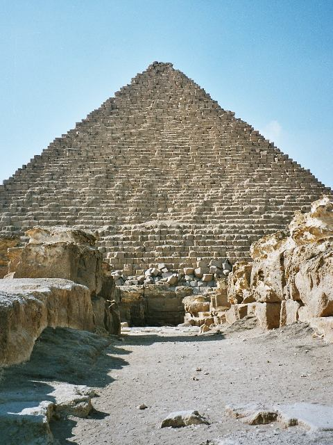

Les pyramides de Gizeh
Les pyramides de Gizeh, aussi appelées complexe pyramidal de Gizeh, sont l'ensemble des pyramides égyptiennes situées dans la nécropole de Gizeh sur le plateau de Gizeh. Les pyramides sont les monuments les plus visités d’Égypte, mais aussi les plus anciens du monde. Il s'agit de constructions funéraires, construites sous les ordres de pharaons de différentes dynasties.
La nécropole de Gizeh abrite donc les trois plus grandes et plus célèbres des pyramides d'Égypte : celles de Khéops, Khéphren et Mykérinos.
Le site comprend également quelques pyramides plus petites comme les « pyramides des reines » et la pyramide de Khentkaous Ire.
Pyramide de Khéops
Également connue sous le nom de Grande Pyramide de Gizeh, Khéops (Jufu) est la plus grande pyramide, la plus importante de toutes. Elle mesure 140 mètres de haut et repose sur une énorme base de 230 mètres (avec un périmètre de près d'un kilomètre). C’est la seule des sept merveilles du monde antique qu’on peut encore admirer de nos jours ! Durant des millénaires, elle fut la construction humaine de tous les records : la plus haute, la plus volumineuse et la plus massive. Ce monument phare de l'Égypte antique est depuis plus de 4 500 ans scruté et étudié sans relâche. Il est possible de visiter l’intérieur de la pyramide, mais si le symbole est fort vous n’y verrez rien de valeur. Au pied de la pyramide se trouve un grand hangar en béton assez disgracieux. Il abrite une barque solaire sacrée de 46 mètres de long, un véritable chef-d’œuvre réalisé à partir de bois de cèdre du Liban, qui aurait permis à Khéops de rejoindre l’Au-delà.
Pyramide de Khéphren
Khéphren était le 3e pharaon de la IVe dynastie, celle qui fit construire les 3 grandes pyramides de Gizeh. Fils de Khéops, il régna entre -2518 à -2492.
La pyramide de Khéphren est la deuxième plus grande d'Égypte, juste derrière celle de Khéops. C'est la seule pyramide qui conserve encore une petite partie de son ancien revêtement en calcaire blanc au sommet. Vous serez assez surpris par le fait qu’elle semble plus grande que la première. En fait, elle est construite sur une base rocheuse, ce qui donne cette impression. Vous pouvez visiter l’intérieur, comme pour la pyramide de Khéops.
Pyramide de Mykérinos

La pyramide de Mykérinos est la plus petite de la série, mais tout aussi intéressante. Elle a une hauteur de 66 mètres et sa base mesure plus de 100 mètres de long.Architecturalement parlant, le complexe funéraire de Mykérinos n'est pas différent de ceux de ces prédécesseurs. Il se compose lui aussi d'une pyramide centrale entourée par un haut mur, un temple haut, une chaussée, un temple bas et des pyramides annexes, avec le schéma classique d'un temple haut accolé à la pyramide, une chaussée en descendant jusqu'au temple bas qui servait non seulement de temple mais aussi de quai.
La pyramide de Mykérinos possède plusieurs particularités. Tout d'abord, c'est la première d'une nouvelle série de pyramide, elle clos les pyramides géantes de ses prédécesseurs et annonce se que seront les futures pyramides des pharaons. Ensuite, elle contient de nombreux décors en façade de palais, un motif inédit dans une pyramide, toutes périodes confondues. Ces décors sont des rectangles géométriques dessinant des fausses portes imbriquées les unes dans les autres.
Autre spécificité, la structure interne de la chambre funéraire et de la chaussée qui diffère des deux autres pyramides
Sphinx de Gizeh
Visiter les pyramides de Gizeh est aussi l’occasion d’admirer le célèbre Sphinx, qui mesure plus de 70 mètres de longueur, 14 mètres de largeur et 20 mètres de hauteur. C’est la plus grande sculpture monolithique du monde, encore aujourd’hui ! Elle représente un colossal sphinx couché, chimère de la mythologie égyptienne symbolisant l’union entre le dieu Râ et le pharaon, ici, Khéops. Cette mystérieuse créature a un corps de lion et une tête humaine ornée d'une coiffe royale.